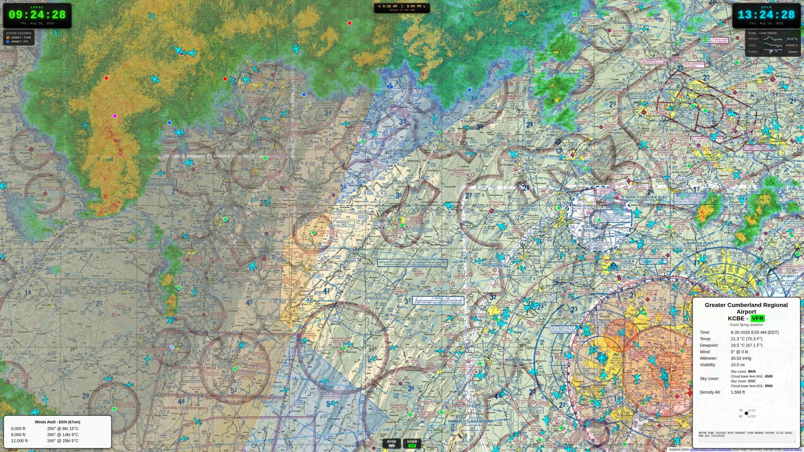
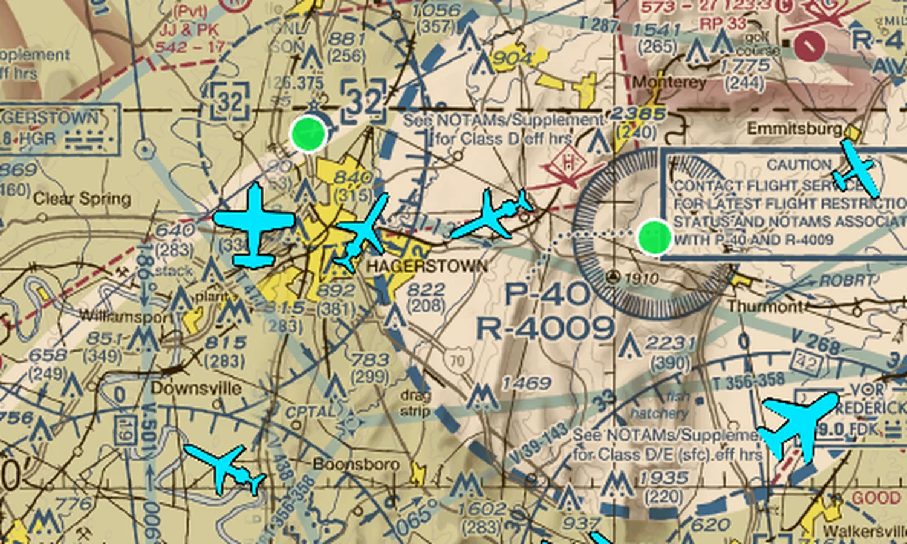
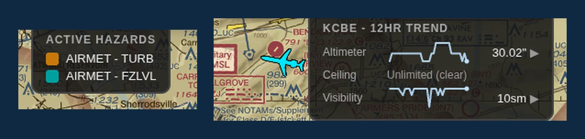
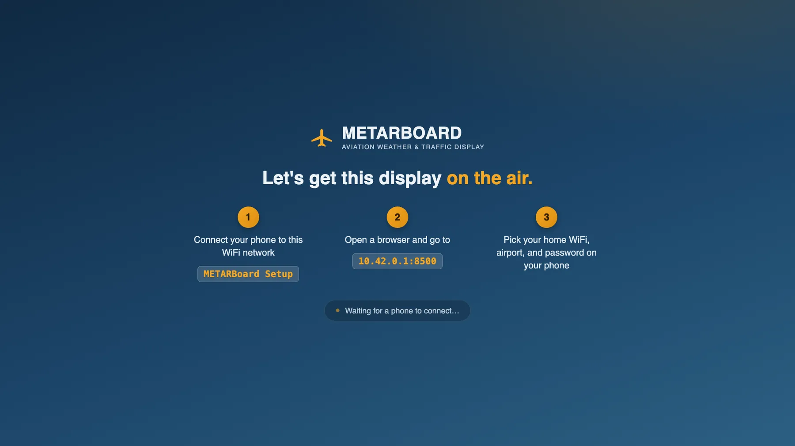

The wall display your hangar has been missing.
Live sectional charts, real ADS-B traffic, METARs, and hazard overlays — always on, always current, on a dedicated screen nobody has to babysit.

Everything a pilot checks before walking to the ramp.
Not a weather app squinting on a phone — a purpose-built display designed to be read from across the room.
Real ADS-B traffic, not a stock photo of a radar screen.
Aircraft render as actual type icons — not generic dots — scaled and outlined to stay readable on a TV across a lounge. Military traffic highlights in red; your own fleet highlights in magenta, so students learn to spot your aircraft on sight.
- Type-accurate icons for GA singles, twins, jets, rotorcraft
- Fleet & military highlighting, tuned for high-contrast visibility
- Built on the same sectional base map pilots already read

Flight category, hazards, and trend — at a glance, not a tap.
Your home airport's current conditions sit in a always-visible popup with flight category coloring. Active SIGMETs and AIRMETs (icing, turbulence, IFR, freezing level) get their own color-coded legend, and lightning strikes render live on the map.
- 12-hour trend sparklines for altimeter, ceiling, and visibility
- Winds aloft, sunrise/sunset countdown, local + Zulu clocks
- Every overlay toggles independently from a simple admin page

Every layer is optional. Turn on what matters at your field.
Nobody needs all of this running at once. Each overlay below toggles independently from /admin — no reboot, no re-provisioning, just a checkbox.
Fleet highlighting
List up to 50 of your own tail numbers and they render in magenta — instantly obvious against every other aircraft on screen.
Favorite airports
Pin up to 6 other fields — a practice area, a common cross-country stop — to a strip along the bottom with live flight category.
Live ADS-B traffic
Type-accurate aircraft icons, scaled and outlined to stay readable across a room.
Military highlighting
Government/military-registered aircraft render in red automatically — no configuration needed.
Live NEXRAD radar
High-resolution weather radar mosaic, layered under everything else.
Lightning strikes
Recent strikes plot live on the map and fade out as they age off.
SIGMETs
Convective activity, severe turbulence, and icing — color-coded on the map with a legend.
AIRMETs
IFR conditions, turbulence, icing, freezing level, and mountain obscuration, each their own color.
TFRs
Active Temporary Flight Restrictions outlined right on the sectional as they're issued.
Home airspace boundary
Your field's own Class B/C/D/E outline, drawn directly on the chart.
12-hour weather trend
Sparklines for altimeter, ceiling, and visibility, so a shift in weather is obvious before it's read.
Winds aloft
Forecast winds and temperatures at 3,000 through 12,000 ft from the nearest station.
No keyboard. No mouse. No IT ticket.
Plug it into power and a screen. Everything else happens from a phone.
Connect your phone
The display broadcasts its own open WiFi network the first time it boots — no password to look up.
Open one page
Your phone gets a simple wizard. The TV shows plain instructions the whole time, so nobody's guessing.
Pick WiFi & airport
Choose your network, enter your home airport, set an admin password. The display reloads itself — done.

Appliance-grade, on purpose.
This is a display, not a computer someone has to maintain. It's built to recover from problems on its own.
Updates itself
New features and fixes ship automatically. Every update is verified before it's installed, and rolls back on its own if something's wrong.
Self-healing
A watchdog keeps the display honest — if anything on screen ever gets stuck, it recovers on its own, with nobody touching it.
Boots straight to the map
No desktop, no login screen, no taskbar. Power goes out, power comes back — the display is right back where it left off.
Before you ask — a few answers.
What does METARBoard show?
A live sectional chart with real ADS-B traffic, your home airport's current conditions and flight category, active SIGMETs and AIRMETs, lightning strikes, a 12-hour weather trend, winds aloft, and sunrise/sunset — all on one always-on display.
Is METARBoard safe to use for flight planning?
No. METARBoard is a situational-awareness display for ground use in briefing rooms, lounges, and ramps. It is not a certified avionics product and should never be used as a primary source for flight planning or in-flight decision making — always consult official briefings, NOTAMs, and ATC.
How is METARBoard set up?
There's no keyboard, mouse, or IT ticket involved. On first boot the display broadcasts its own open WiFi network; a phone connects to it, opens one page, picks a home WiFi network and airport, and the display reloads itself automatically.
Can METARBoard highlight my school's own aircraft?
Yes. Up to 50 tail numbers can be listed as fleet aircraft and they render in magenta on the map, distinct from every other aircraft, so students learn to spot your fleet on sight.
Does METARBoard need an internet connection to keep working?
It needs WiFi to pull live weather, traffic, and hazard data, but the sectional and terminal charts themselves are stored on the device, and the display self-updates and self-heals without any IT maintenance.
Want one in your hangar?
METARBoard is early — we're talking with flight schools and FBOs about getting displays into the field. Get in touch and let's talk about your space.